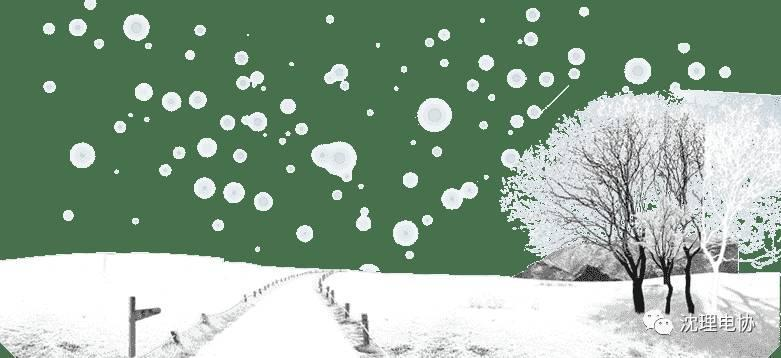
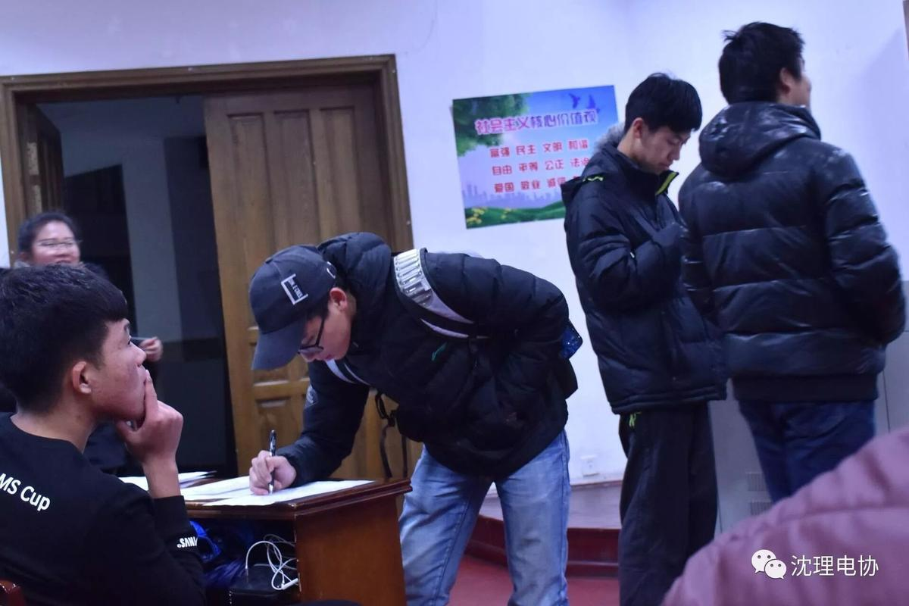
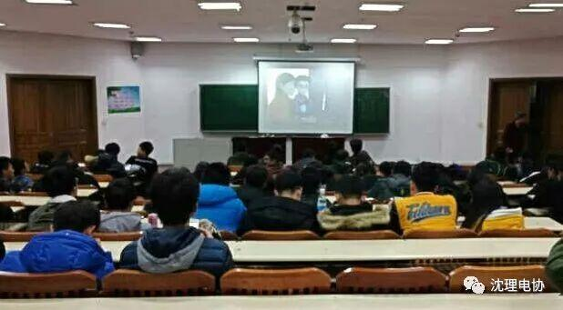
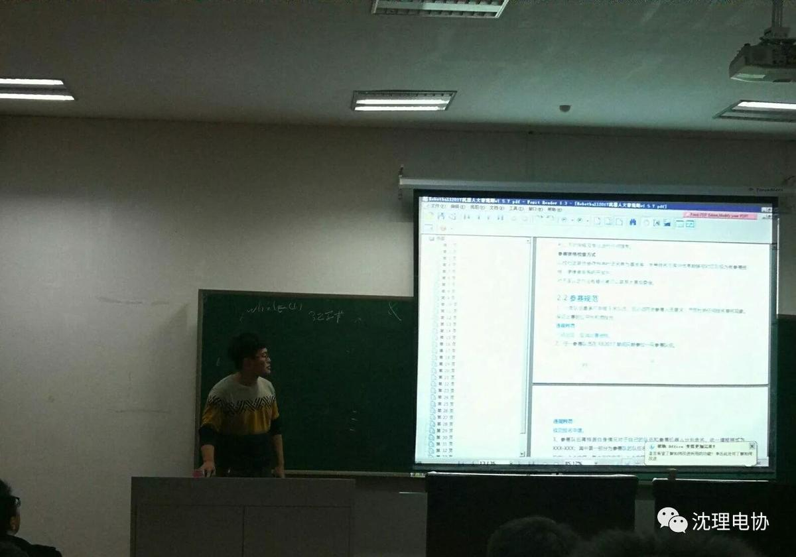
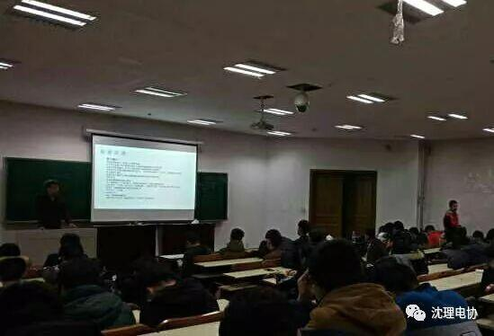

第五次教学
第五次教学
十一月二十四号，又一个周五，原来我们不知不觉已经进入电协这个大家庭七周有余了，这是我们的第五次教学。距离Robotball还有十六天，不少同学已经做好了比赛的小车，满怀期待的等待着学长们的进一步教学。
本周主要讲解遥控器的主要元器件，数据处理（CAD），数据通讯（蓝牙，2.4G，WIFI）。

虽然北国的夜晚很冷，但是同学们依旧准时的来报道。

在教学开始前，大家坐在一起，一起回顾国漫《机甲大师》。相信青春热血的我们也能在不断的学习与实践中实现自己的梦想！

不同的教室，不同的学长，却一样的认真，他们都耐心的给我们讲解着那些基础的知识。


在一次次教学中，学长们对我们的教学也由直接教学慢慢偏向了引导教学，从直接告诉我们用哪种途径解决问题到现在告诉我们如何找到解决问题的途径，希望大家在一步步的积累下能够找到自己的路。
编辑：张诗梦
图片：信息部成员